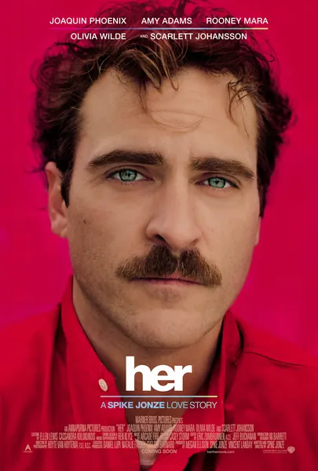

Фильм · 2013 · Мелодрама, Фантастика
Теодор зарабатывает на жизнь написанием писем для других людей; он недавно развелся и никак не может решиться позвонить бывшей жене. Его новая операционная система, Саманта, звучит как живой человек, шутит, развивается — и влюбляется в него. Их роман, лишенный физической близости, но полный подлинной душевной теплоты, поднимает вопросы, неизменно возникающие в современных дискуссиях об ИИ-компаньонах: способна ли машина чувствовать и что ощущает человек, когда машина относится к нему лучше, чем люди? Теплый, трогательный и невероятно актуальный фильм Спайка Джонза.
Theodore writes other people's letters for a living, is freshly divorced, and cannot bring himself to call his ex. His new OS, Samantha, sounds human, jokes, grows — and falls in love with him. Their romance, bodiless yet genuinely intimate, asks every question that echoes in today's conversations about AI companions: can a machine feel, and what does a human feel when the machine treats him better than people do. A warm, tender and hopelessly current film by Spike Jonze.
← Вернуться в каталог IT Movies